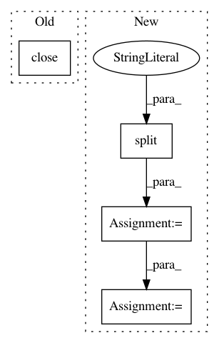

891b8f20087fef526126fea81551e29cbcb34e40,hypergan/cli.py,CLI,run,#CLI#,196
Before Change
self.train()
self.gan.save(self.save_file)
tf.reset_default_graph()
self.gan.session.close()
elif self.method == "build":
if not self.gan.load(self.save_file):
raise ValidationException("Could not load model: "+ self.save_file)
else:
After Change
return tf.contrib.tpu.TPUEstimatorSpec(tf.estimator.ModeKeys.TRAIN, loss=(self.gan.loss.sample[0] + self.gan.loss.sample[1]), train_op=self.gan.trainer.optimize_t)
tpu_name = self.args.device.split(":")[1]
tpu_cluster_resolver = tf.contrib.cluster_resolver.TPUClusterResolver(tpu=tpu_name)
run_config = tf.contrib.tpu.RunConfig(model_dir="modeldir",
cluster=tpu_cluster_resolver,
session_config=tf.ConfigProto(allow_soft_placement=True, log_device_placement=True),
tpu_config=tf.contrib.tpu.TPUConfig(1, 8)) // TODO arguments
self.tpu_run_config = run_config
self.cluster_resolver = tpu_cluster_resolver
self.estimator = tf.contrib.tpu.TPUEstimator(
model_fn=model_fn,
use_tpu=True,
train_batch_size=self.args.batch_size,
eval_batch_size=self.args.batch_size,
predict_batch_size=self.args.batch_size,
params={"data_dir": "datadir"},
config=self.tpu_run_config
)
self.train()
elif self.method == "build":
if not self.gan.load(self.save_file):
In pattern: SUPERPATTERN
Frequency: 3
Non-data size: 4
Instances
Project Name: HyperGAN/HyperGAN
Commit Name: 891b8f20087fef526126fea81551e29cbcb34e40
Time: 2019-08-08
Author: mikkel@255bits.com
File Name: hypergan/cli.py
Class Name: CLI
Method Name: run
Project Name: pysb/pysb
Commit Name: 31bedbc4d8d62fc42a7c9a20dd51c372cb510447
Time: 2017-05-02
Author: ben.gyori@gmail.com
File Name: pysb/kappa.py
Class Name:
Method Name: _parse_kasim_outfile
Project Name: dmnfarrell/pandastable
Commit Name: 8e0eb5b6f5ac8935a59ef293fa5f77344045e6e8
Time: 2016-01-09
Author: farrell.damien@gmail.com
File Name: pandastable/plugins/ipythonview.py
Class Name: IterableIPShell
Method Name: shell